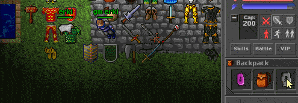
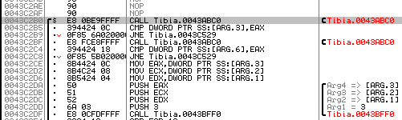
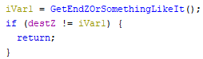
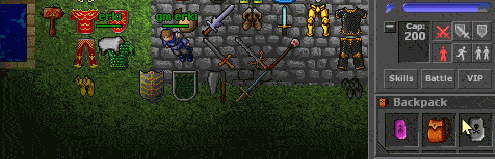
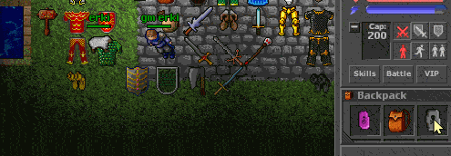
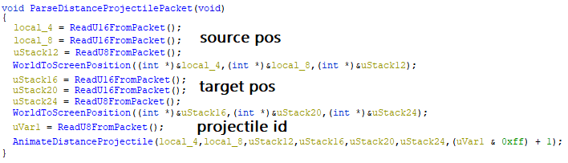
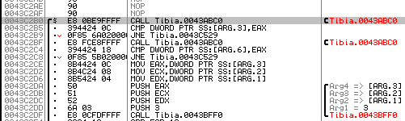
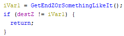
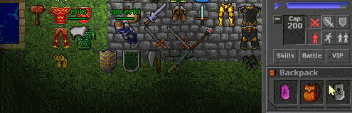

Reverse engineering - part 4 - projectiles
2021-04-24
Arguably the most fun part of Tibia was PvP using runes that you had to aim.
So this time we're going to take a look at how the client parses projectile packets.
Before we begin, this is the current state of the server:

(I will come back to the parts between the last blog post and this one later on.)
At this point I have defined a lot of the client's internal packet parser and I happen to know that the client expects packet id 0x85 (133) for projectiles.
The function looks pretty much as follows (
What was "interesting" this time was that it seemed like the client wouldn't respond to the packet at all, no matter what I sent.
As it turns out, you have to actually call the
What's even more embarrassing is that I had to debug the client through ollydbg to figure that out.
After setting a breakpoint at the starting address of the
Luckily it was still useful getting used to ollydbg again, because now the client received the packet but didn't do anything after parsing it.
Time to set a breakpoint again and actually step through the code this time!

(picture of ollydbg without the breakpoint toggled, just imagine this but the selected line is redder)
Since I don't know too much assembly, I used Ghidra to follow the addresses in ollydbg.
Apparently there's an if statement that performs an early return based on the Z coordinate?

Cool, we're getting a better understanding of what's going on and where it's going wrong :-)
So I take a look at my code again and, for some unknown reason, I added the source pos to the target pos (literally
Let's try removing that, now that we're actually sending the packet.
Oh.
It works now.. The projectile packet is parsed correctly and animates :-D
I intend to cover more of the early process of figuring out where the packets are parsed and all that in later blog posts.
Thanks to ezgif.com the gifs are less than half the original size :-)
So this time we're going to take a look at how the client parses projectile packets.
Before we begin, this is the current state of the server:

{kind=link}
(I will come back to the parts between the last blog post and this one later on.)
At this point I have defined a lot of the client's internal packet parser and I happen to know that the client expects packet id 0x85 (133) for projectiles.
The function looks pretty much as follows (
AnimateDistanceProjectile is a lot more involved):{kind=link}
What was "interesting" this time was that it seemed like the client wouldn't respond to the packet at all, no matter what I sent.
As it turns out, you have to actually call the
Send function in your own code if you want the client to receive it..What's even more embarrassing is that I had to debug the client through ollydbg to figure that out.
After setting a breakpoint at the starting address of the
ParseDistanceProjectilePacket and trying to throw a rune I finally realized that the client never received the packet (and, after a while, why).Luckily it was still useful getting used to ollydbg again, because now the client received the packet but didn't do anything after parsing it.
Time to set a breakpoint again and actually step through the code this time!

{kind=link}
(picture of ollydbg without the breakpoint toggled, just imagine this but the selected line is redder)
Since I don't know too much assembly, I used Ghidra to follow the addresses in ollydbg.
Apparently there's an if statement that performs an early return based on the Z coordinate?

{kind=link}
Cool, we're getting a better understanding of what's going on and where it's going wrong :-)
So I take a look at my code again and, for some unknown reason, I added the source pos to the target pos (literally
destPos += sourcePos) when I first wrote the function? That can't be right...Let's try removing that, now that we're actually sending the packet.
Oh.
It works now.. The projectile packet is parsed correctly and animates :-D
{kind=link}
I intend to cover more of the early process of figuring out where the packets are parsed and all that in later blog posts.
Thanks to ezgif.com the gifs are less than half the original size :-)